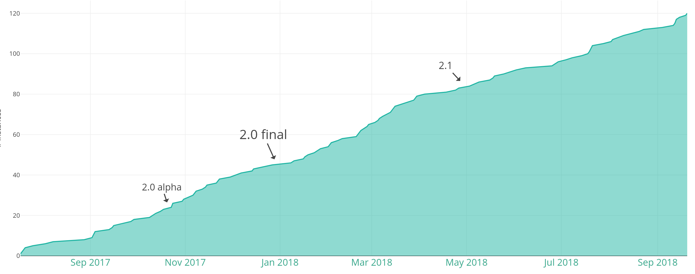
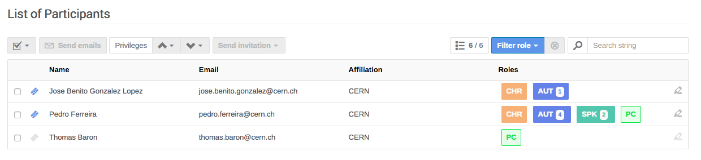
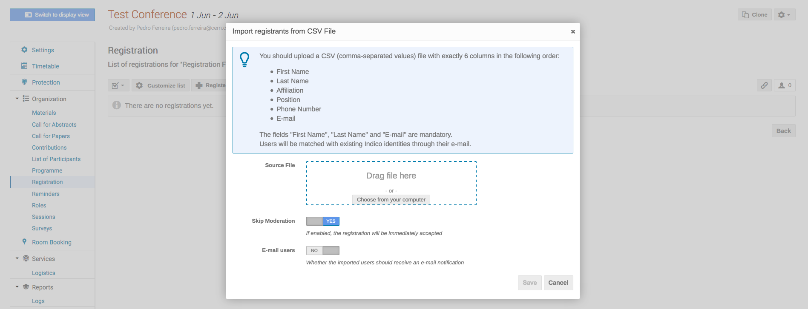
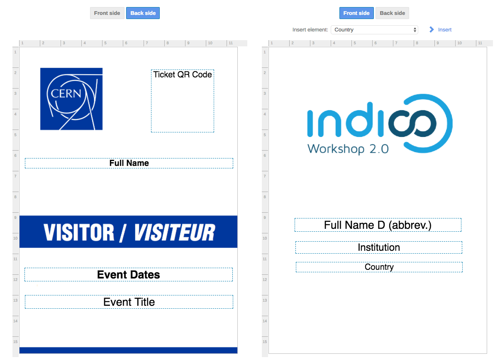

Event Management in HEP
- Event management system
- Digital repository
- Small meetings 🠒 Big conferences
- Started in 2004
- FLOSS, no strings attached!
@CERN: > 500.000 events


Indico 2
- ~3 years of development
- ~95% code rewritten
- RC end 2017
- Official release Jan 2018

Instances on 2.x
- 2.1 - May 2018 ☺️
- 2.0 - Jan 2018 😐
- 1.2.2 - Jul 2017 👴
- 1.2.1 - Jan 2017 👴
- 1.2 - Jul 2014 💀
- 0.98.2 - Jun 2012 🧟
- 0.98.1 - Apr 2012 🧟
- 0.98 - Mar 2012 🧟
🚨Please upgrade!🚨
Please upgrade...
Useful links
Recent Developments
Roles
Import from CSV
Badges
Containers
$ git clone https://github.com/indico/indico-containers.git
$ docker-compose up


Future
Version 2.2
- Overhaul of the Room Booking UI
- Technology refresh 🔄
Versions 2.3 - 2.4
- Added flexibility in Paper Reviewing
- Integration with CalDAV 📅
Internationalization
🇫🇷 🇪🇸 🇳🇱 🇵🇱 🇯🇵
Community
- ~30 PRs from outside CERN this year
- Still a small number of contributors
- Ongoing work on other plugins
Conclusion
- Indico 2.0 is now the standard
- Nice new features for conference organizers
- Technology stack keeps evolving
- Greater community engagement
- Please update to 2.1!
 @getindico
@getindico indico/indico
indico/indico- 🌎 https://getindico.io
- 🎨 https://sandbox.getindico.io
(
I have stickers!
 )
)
)